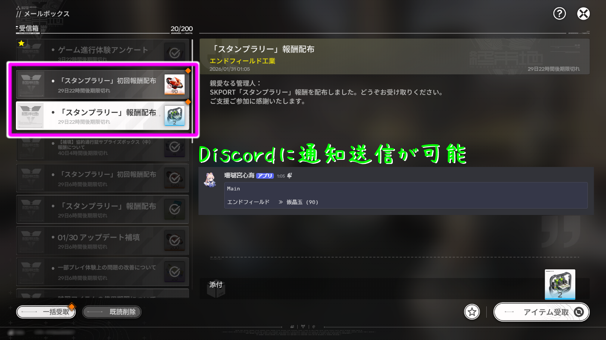

const Accounts = [
{ accountName: "アカウント名", /** 自由に書き換えられます。 **/
ArknightsEndfield: true, /** ログインボーナスを取得して欲しい場合は「true」に、そうでない場合は「false」と書き換えます。 **/
ACCOUNT_TOKEN: "000000000000000000000000" /** 自身のアカウント情報に書き換えて下さい。 **/
}
];ACCOUNT_TOKEN を探し、必要に応じて URL デコード（%2F を / に置換）します。const Accounts = [
{ accountName: "アカウント名",
ArknightsEndfield: true,
ACCOUNT_TOKEN: "000000000000000000000000"
},
{ accountName: "アカウント名 2",
ArknightsEndfield: true,
ACCOUNT_TOKEN: "000000000000000000000000"
}
];const discord_notify = true; /** Discordに通知を送信する場合は「true」を、そうでない場合は「false」と書き換えます。 **/
const discord_silent = false; /** 通知を行う際に、通知音を鳴らさない場合は「true」を、そうでない場合は「false」と書き換えます。 **/
const myDiscordID = "000000000"; /** 通知を行う際に、自身にメンションする場合は『ユーザーID』を、そうでない場合は『空（""）』に書き換えます。 **/
const discordWebhook = "https://discord.com/api/webhooks/000000000/OOOOOOOOO"; /** 通知を行う際に、メッセージを送信するテキストチャンネルのウェブフックURLに書き換えて下さい。 **/実行する関数を選択：main上記の設定で保存すると、毎日指定した時間帯に自動で処理が実行されます。
実行するデプロイを選択：Head
イベントのソースを選択：時間主導型
時間ベースのトリガーのタイプを選択：日付ベースのタイマー
時刻を選択：午前1時～2時
エラー通知設定：任意